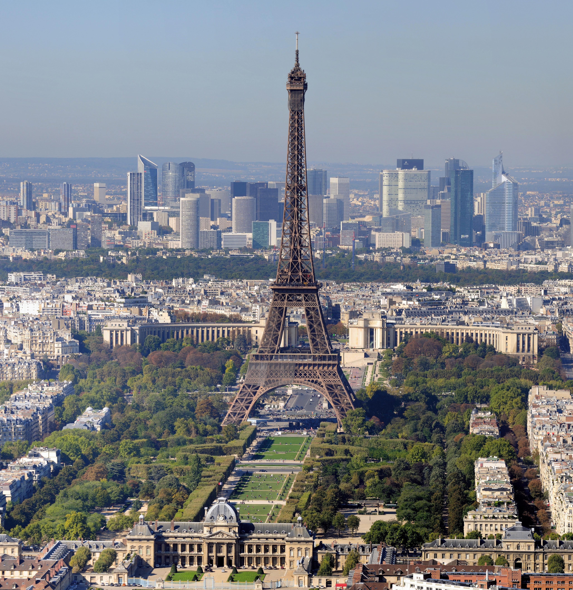

Про місто

Коротка характеристика: Столиця Франції, всесвітній центр мистецтва, моди, гастрономії та культури.
Чому я обрав це місто: Париж зачаровує своєю унікальною архітектурою, затишними вуличками та романтичною атмосферою уздовж Сени.
Цікаві факти:
- Ейфелева вежа спочатку планувалася як тимчасова споруда для Всесвітньої виставки 1889 року.
- Лувр є найбільшим і найвідвідуванішим художнім музеєм світу.